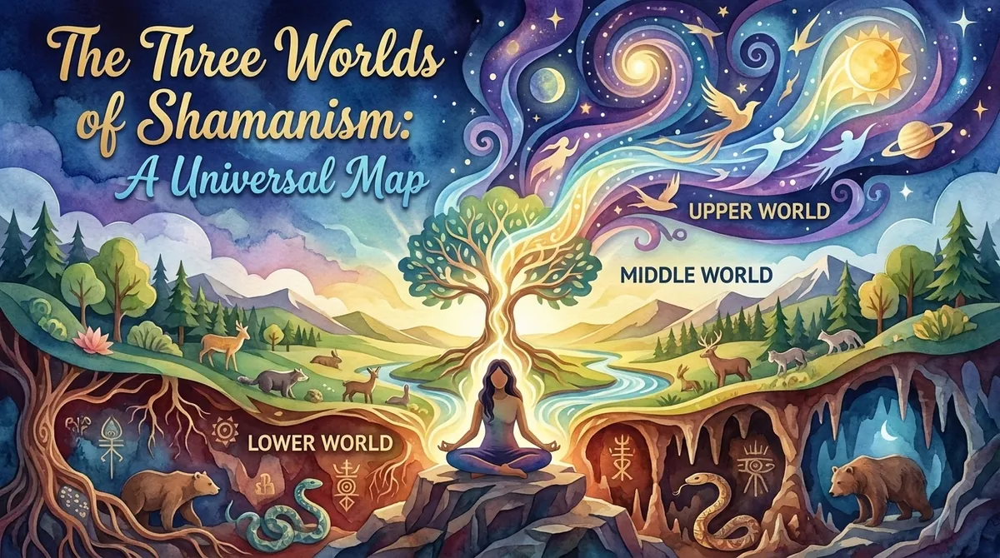
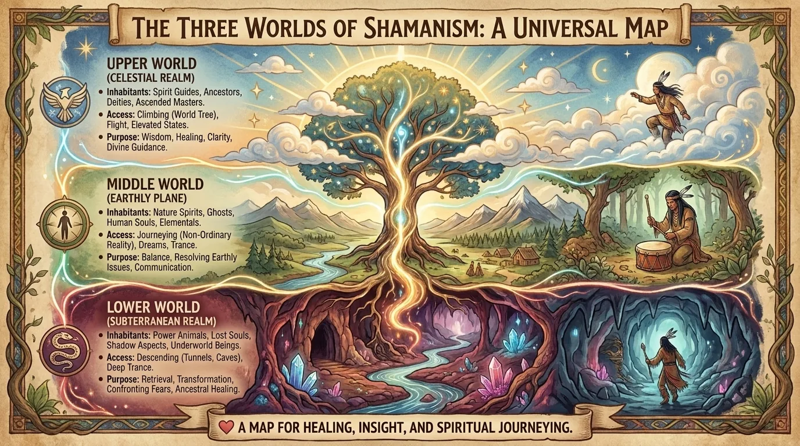
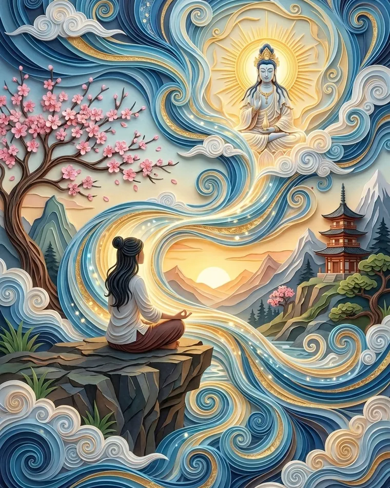
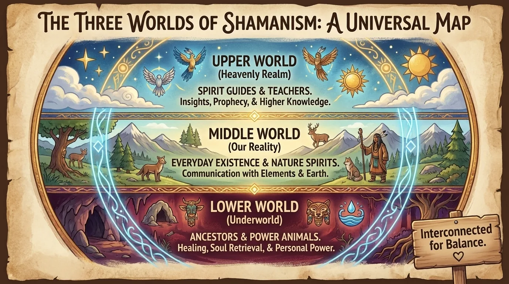

The Three Worlds of Shamanism: A Universal Map

Shamanic cosmology maps a Lower, Middle and Upper World. What this map means across cultures, the world tree, and how to use it in a modern meditation.
Three Worlds, One Tree, and Far More Nuance Than a Simple Vertical Map
In many contemporary presentations of the shamanic journey, the universe is organized into three great regions: the Lower World, the Middle World and the Upper World, connected by a cosmic tree, a mountain, a pillar or some other axis that symbolically lets you pass from one level to another.
The picture is appealing because it’s instantly understandable.
Below: roots, earth, animals and deep forces.
In the middle: our world, human life and the nature around us.
Above: sky, guides, visions and wider perspectives.
There is, however, one major oversimplification to avoid: there is no single worldwide shamanic doctrine that has adopted exactly the same three-box map.
The word shamanism covers a great diversity of ritual and cosmological traditions, particularly in Siberia and in other parts of the world. Modern classifications often draw their structures together, but the details can vary enormously from one culture to another.
Among the Sakha of Siberia, for example, an ethnographic presentation from Columbia University describes an upper world made up of several levels, a middle world inhabited by humans, animals and certain nature spirits, and a dark lower world associated with other spiritual beings.
Among the Tuvans, there is also a three-part division of the cosmos, even though some local variants describe the number and nature of the worlds differently.
So here’s the first rule for understanding the three worlds of shamanism:
they are less three strictly identical universal boxes than a particularly widespread cosmological pattern, later reinterpreted and standardized in some contemporary forms of shamanic practice.
The Lower World: Going Down Doesn’t Mean Going to Hell
The Lower World, sometimes called the Underworld in contemporary shamanism, is often the first destination taught to people discovering the shamanic journey.
And right away, a misunderstanding appears.
“Lower” doesn’t necessarily mean “bad.”
Our Western imagination easily links:
- up = good;
- down = bad.
Heaven versus hell.
Light versus darkness.
In various shamanic cosmologies, that opposition is far less simple.
Depending on the tradition, the lower world may be associated with the dead, with certain spirits, with the earth or with underground powers, but the contemporary symbolism of the shamanic journey often makes it a universe of wild nature, animals, roots and instinctive forces.
To enter it in a shamanic visualization, the practitioner often imagines a natural opening:
- a cave;
- a burrow;
- a hollow root;
- a spring;
- a crack in the earth.
They go down.
Then the passage opens onto a landscape.
Forest.
Meadow.
Mountain.
River.
The scenery varies enormously depending on imagination and personal associations.
In some modern methods, inspired in particular by core shamanism, this is the world where the practitioner seeks a power animal or an allied spirit.
But it’s important to distinguish this contemporary model from specific ethnographic cosmologies, in which the inhabitants of the lower world may be described very differently.
Psychologically, this descent also offers an extremely powerful image.
Going down means leaving intellectual analysis behind and moving toward:
- the body;
- instinct;
- memory;
- images;
- less verbal emotions.
So it’s no surprise that the Lower World works so well as a landscape for meditation and inner journeying.
We often think of the psyche itself in vertical terms.
Something is “deeply buried.”
A fear “resurfaces.”
We “go deep within ourselves.”
Language had already installed the elevator.

The Middle World: Our World, Seen Differently

The Middle World is probably the hardest to explain because it looks like… the world you’re already in.
In some traditional cosmologies, it simply refers to the level where humans, animals and various beings or powers tied to the landscape live.
Among the Sakha, for example, the middle world includes humans, animals and certain spirits associated with mountains, plants and natural phenomena.
In contemporary shamanism, the Middle World is sometimes presented as the spiritual or non-ordinary dimension of everyday life.
A forest is still a forest.
But it can be perceived as inhabited by presences, relationships and meanings.
A river is no longer just a volume of water.
It becomes a place you enter into relationship with.
This view connects with animism, a term used in anthropology to describe worldviews in which animals, places, objects or natural phenomena can be considered to have some form of inner life, agency or presence.
We should, however, avoid reducing every form of animism to:
“Everything has a soul exactly like a human’s.”
The views are far more varied.
For a modern practitioner, the Middle World can become a remarkable exercise in presence.
Instead of walking through a park thinking only about your phone, you observe:
- the trees;
- the birds;
- the temperature;
- the movements of the wind;
- the smells;
- the interactions.
You’re not proving that there’s a spirit behind every bush.
You’re changing your relationship with the landscape.
And sometimes, that change alone is enough to make the world feel a lot less flat.
The Upper World: Rising to Change Perspective
The Upper World is generally associated with the sky, height, light, celestial beings, teachers or certain spiritual powers.
In several Siberian cosmologies, the sky itself has several tiers or levels.
Yakut cosmology, for example, describes a universe with three main levels, with several heavens in the upper world and different kinds of spirits inhabiting them.
In the contemporary shamanic journey, access to the Upper World is often imagined through:
- an immense tree;
- a mountain;
- a rope;
- a ladder;
- a column of smoke;
- a ray of light;
- a bird rising upward.
The scenery tends to become brighter, vaster or airier.
Here again, it would be tempting to draw an automatic equivalence:
Lower World = unconscious.
Upper World = superconscious.
Middle World = ordinary consciousness.
This psychological reading can be very useful as a metaphor.
It just shouldn’t be presented as the universal historical meaning of all shamanic traditions.
For a modern practitioner, the Upper World can represent the search for perspective.
When we’re trapped inside a problem, our mental field becomes very narrow.
The imaginary journey upward does the opposite:
it lets you rise above.
See the whole picture.
Ask:
“If I saw this situation from much farther away, what would change?”
It’s almost a psychological reframing technique dressed up as celestial cosmology.
And it’s precisely this blend of symbolism and function that makes these maps so enduring.
The World Tree: Humanity’s Cosmic Elevator
How do you get from one world to another?
Through an axis.
The anthropology of religion often uses the Latin term axis mundi, “the axis of the world,” to describe a symbol connecting different levels of the cosmos.
It can take the form of:
- a tree;
- a mountain;
- a pillar;
- a ladder;
- a vertical axis.
In the shamanic imagination, the world tree is especially powerful.
Its roots plunge into the earth.
Its trunk belongs to the human world.
Its branches reach up toward the sky.
There’s the whole cosmology gathered into a single living organism.
This symbol is far from limited to modern shamanism.
Cosmic trees and vertical structures connecting sky, earth and underworld appear in many mythologies.
But here again, similarity doesn’t mean shared history.
Humans also invented pyramids on several continents without necessarily phoning each other to coordinate the plans.
Sometimes, certain symbolic forms simply take hold because they’re extremely intuitive.
A tree is vertical.
Its roots are invisible.
Its branches symbolically touch the sky.
Hard to find a better architecture for connecting three levels.

Why Does This Map Appear in Different Cultures?
That’s the big question.
Why do we so often find a vertical organization of the cosmos?
There are several possible explanations, and they can coexist.
The first is cultural and historical: neighboring societies exchange stories, practices and symbols.
The second is environmental: sky, the earth’s surface and the underground already form three obvious levels of human experience.
The third is psychological: vertical space lends itself extraordinarily well to metaphors of consciousness.
We spontaneously talk about:
- “lofty thoughts”;
- “deep emotion”;
- “falling into despair”;
- “rising spiritually.”
Finally, in the context of trance, changes in bodily perception can produce sensations of rising, descending, floating or moving that naturally find a cosmological expression.
A recent scientific review of shamanic trance practices highlights the diversity of cultural contexts and techniques, while studying what they have in common: the deliberate alteration of conscious experience within a specific ritual and cultural framework.
In other words, the three worlds aren’t just a map of “places.”
They give structure to an experience.
How to Use This Map in a Modern Meditation Without Claiming to Recreate a Traditional Ritual
You can use the three worlds as a very simple visualization structure.
Start with the Lower World and a question linked to instinct:
“What quality do I need to feel more grounded?”
Then come back.
Next, imagine the Upper World with a question about perspective:
“What would I see differently if I stepped back?”
Then return to the Middle World.
This is essential.
The journey isn’t over until something has been brought back into everyday life.
An idea.
An image.
A decision.
A sentence.
A gesture.
Otherwise, you’ve simply done some very beautiful inner sightseeing.
The Middle World is still where the dishes have to be done.
Even the great spiritual revelations sooner or later meet a sponge.
Frequently asked questions
What Are the Three Worlds of Shamanism?
In many contemporary models, they are called the Lower World, the Middle World and the Upper World. However, their structure and meaning vary considerably from culture to culture.
Is the Lower World the Same as Hell?
No. That equivalence is largely misleading. Depending on the tradition, the lower world may be linked to the dead, to spirits or to underground regions, but it is not simply the equivalent of the Christian hell.
What Is Found in the Upper World?
In some traditional cosmologies, various celestial beings or spirits; in modern practices, it is often associated with guides, teachers and spiritual perspectives.
Do the Three Worlds Really Exist?
They undeniably exist as cosmological and symbolic structures in various traditions. Their existence as objective places independent of human experience is a matter of spiritual belief and has not been established scientifically.
Practice with the app
Rather practice than read?
Everything in this article can be practiced in MeditaDream, a free meditation app: 129 guided meditations and 17 immersive worlds, with no subscription, no ads, no account, and fully offline.
✦ Discover the free app